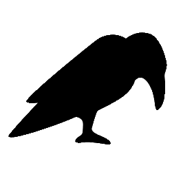

A contest for users and developers of transformation tools.
Part of the Software Technologies: Applications and Foundations (STAF) federated conferences.
Hosted as an online event on Friday 25th June, 2021, as part of STAF 2021.
| Call for cases | 26 January 2021 |
| Expression of Interest | |
| Case Submission Deadline | 31 March 2021 |
The STAF 2021 organizers have decided to run STAF one more year as a virtual event, given the current global situation of the pandemic, and the restrictions that are still in place.